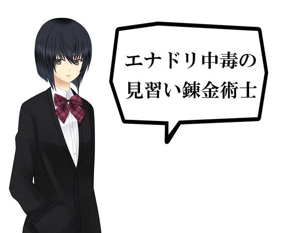
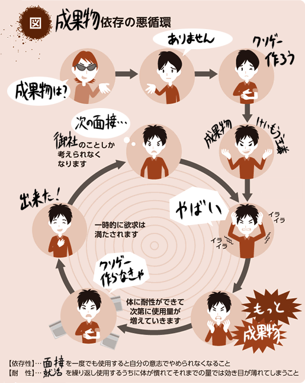
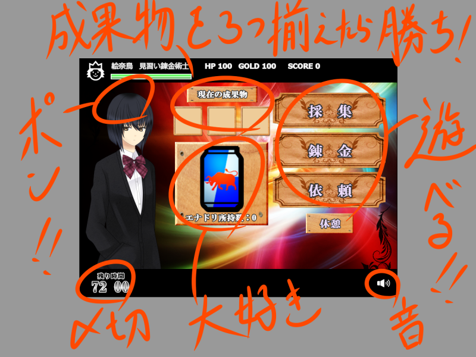
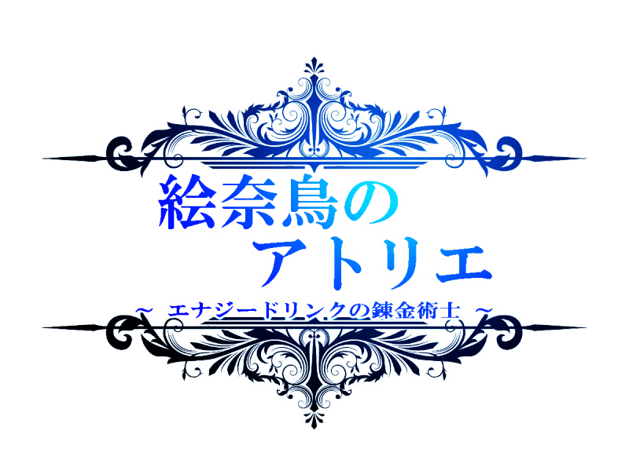

紹介
世界観
遊び方
対応環境
著作権



Vista以降（Windows以外では動作未確認）。
Chrome等のHTML5に対応したブラウザ。
フォントの都合でレイアウトが崩れることがあります。

【 画像 】
光煌晃
胡蝶
七重
ヨシュケイ
johny_deff
とくだ屋
フリー素材 * ヒバナ
BEST WALLPAPER
ICOOON MONO
シルエットデザイン
みやぎ県政だより(2010年12月号)「薬物、ダメゼッタイ」
【 音楽 】
「星へ」ju-nya
「Stream D」ju-nya
「Gentle White」ju-nya
「5 Beats Strings」ju-nya
「BGM002」うたたP
「E-sphere」しましまP
「エルフの弓」こおろぎ
「魔導への対峙」こおろぎ
「未確認神核仮想カタストロフ」こおろぎ
「真夜中の路地裏」ChinoRi侯爵
「One's believes」秋山裕和
「Moment」秋山裕和
Marc Manzanares
【 効果音 】
くらげ工匠
無料効果音で遊ぼう！